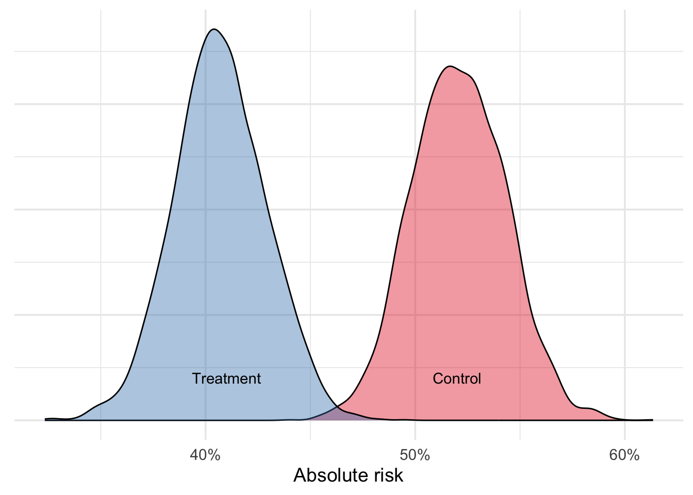
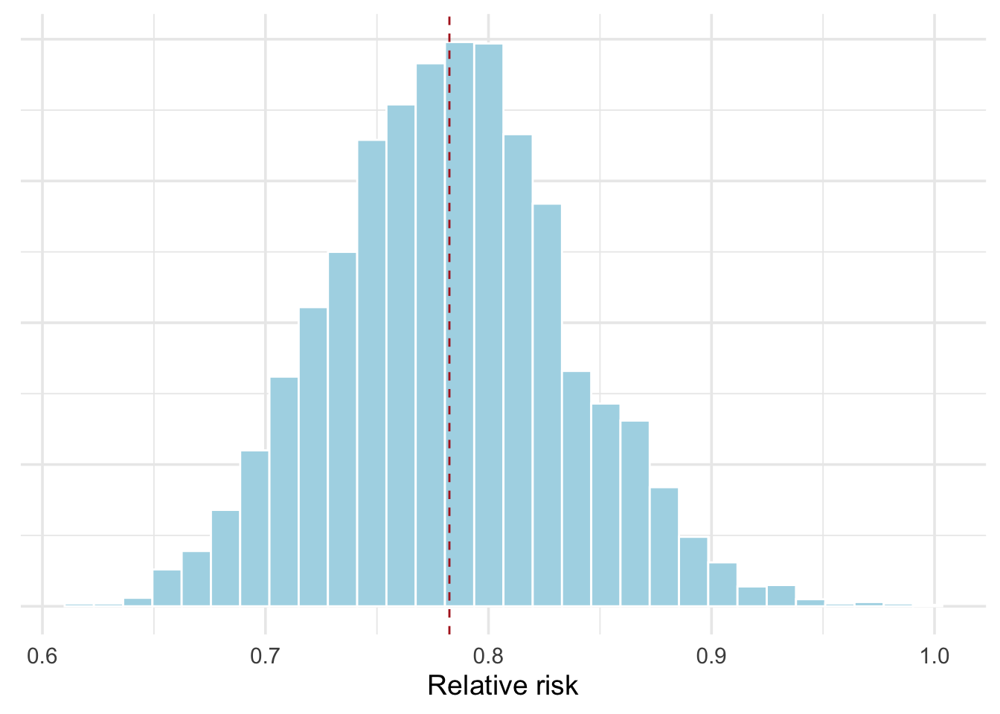
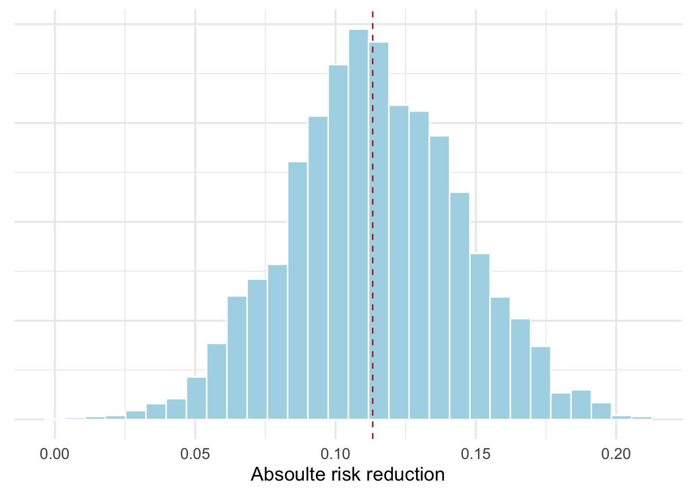
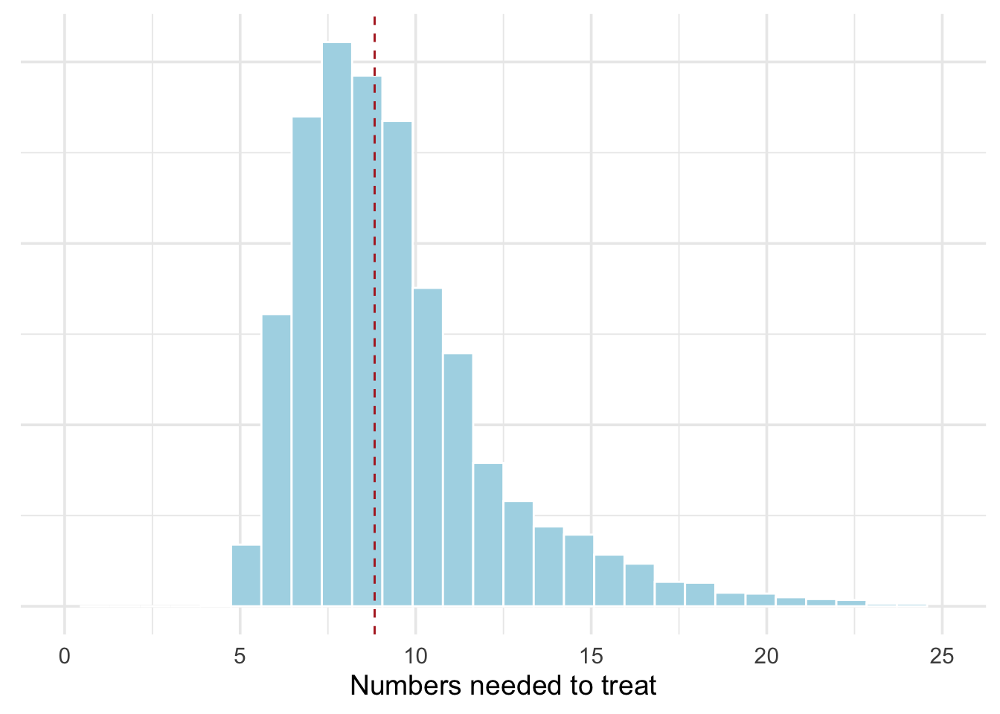
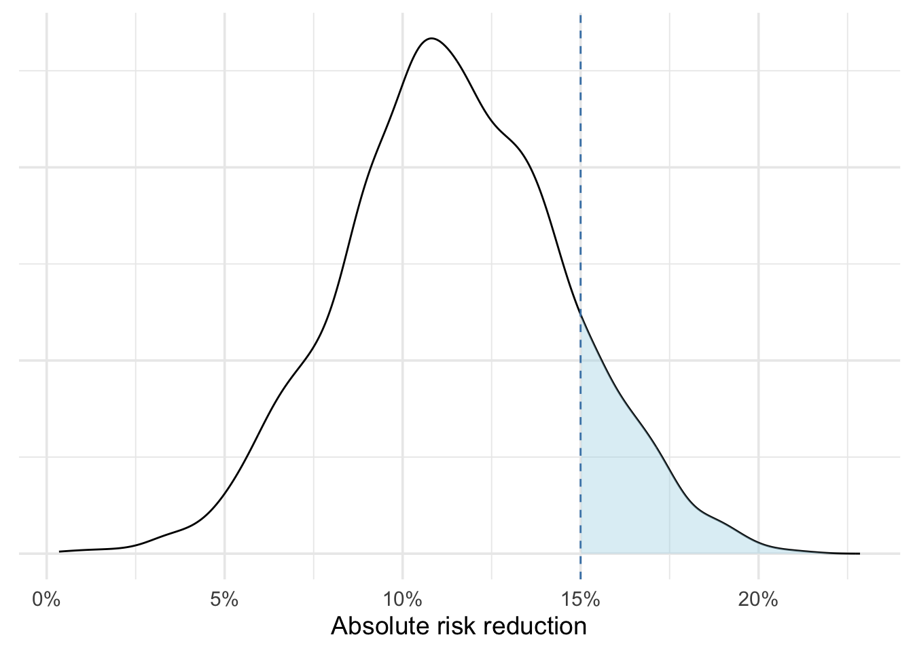
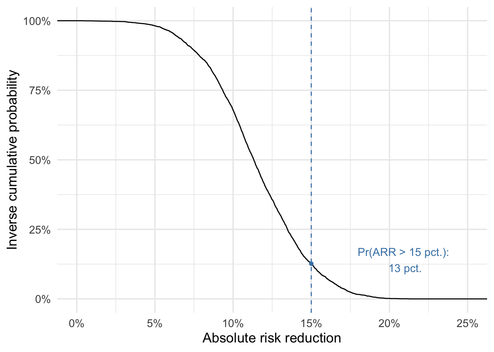

Packages used in this post
library(tidyverse)
library(rstanarm)
library(tidybayes)
library(kableExtra)
theme_set(theme_minimal(base_size = 14))Paw Hansen
July 13, 2023
Welcome to the last part of my three-part series on Bayesian analysis of randomized controlled trial. So far, we have specified priors to take previous knowledge into account and we have fit and validated two different models.
In this final post, we’ll look at how we could go about presenting and interpreting our results. In a report or scientific article, this is the part that should go into the Results section.
In my view, presenting results is where Bayesian analysis really gets to shine. As I hope you will see, taking a Bayesian approach makes it easy to present meaningful and intuitive quantities of interest and gives us incredible flexibility when it comes to answering question of real-world importance.
Recall that in our hypothetical experiment, students were randomly assigned to either a treatment or a control group. The outcome is dichotomous: did the students fail the reading test (indicating dyslexia) or not.
Before we go into any calculations, let’s look at four core quantities of interest commonly used for controlled trial settings:
What do these numbers mean? The absolute risk is simply the risk of an event happening given the exposure.
abs_risk <-
fake |>
summarize(abs_risk = mean(fail_test, na.rm = T),
.by = condition)
abs_risk |>
mutate(across(where(is.numeric), ~round(., 2))) |>
kbl()| condition | abs_risk |
|---|---|
| Control | 0.52 |
| Treatment | 0.41 |
At first sight, it seems the treatment worked! The absolute risk of failing the reading test was 0.52 in the control group but only 0.41 in the treatment group.
Second, the absolute risk reduction is the difference between the observed risks the treatment and the control group:
round(abs_risk$abs_risk[abs_risk$condition == "Control"]
- abs_risk$abs_risk[abs_risk$condition == "Treatment"], 2)[1] 0.11For an individual, the risk reduction expresses the estimated difference in the probability of experiencing the event. In our case the reduction is 11 percent.
Third, relative risk is the risk of an event occurring in the exposed group divided by the risk of the event occurring in the non-exposed group:
round(abs_risk$abs_risk[abs_risk$condition == "Treatment"]
/ abs_risk$abs_risk[abs_risk$condition == "Control"], 2)[1] 0.78Thus, the relative risk of failing the reading test for students in the treatment group was only 0.78 as compared to students in the control group.
Notice that the relative risk is not the same as the odds, since the odds are the risk of an event occurring in any group divided by the risk of the event not occuring.
Finally, the number needed to treat is the number of individuals you need to treat to prevent one additional bad outcome:
round(1/ (abs_risk$abs_risk[abs_risk$condition == "Control"]
- abs_risk$abs_risk[abs_risk$condition == "Treatment"]), 0)[1] 9Finally, for calculating the number needed to treat, we simply take 1 and divide it by the absolute risk reduction. Our results suggests that for every 9 students placed in the program, we could prevent 1 student from failing the reading test.
Hopefully, calculating each of these quantities “by hand”, has given us some intuition about what each number conveys. In practice, though, we will never want to do it this way ever again. For one thing, the above approach did not give us any uncertainty estimates, which we should always include as part of any interpretation. Moreover, recalling formulas can be tedious and for more complicated models, many of these will break down anyway. Instead, we will use our posterior simulations.
rstanarmThe core principle for presenting results is that we don’t want to just show a list of model parameters. These have little interest in and off themselves. Instead, we’ll use the model to make predictions, i.e. show the implications of the model..
To this end, we set up a data frame containing the values of the predictors we intend to predict from (aka a “predictor matrix”). In our context of a controlled trial, these are simply the treatment and the control group:
We can then use this data frame to estimate the absolute risk for each group:
With our predictions in place, we can plot distributions of each of the four quantities of interest, for example for including in a presentation. The following code chunk shows how to plot each of the four quantities from before:
# abs risk of passing reading test
model_preds |>
ggplot(aes(.epred, fill = condition)) +
geom_density(alpha = .4) +
annotate(geom = "text", x = .41, y = 2, label ="Treatment") +
annotate(geom = "text", x = .52, y = 2, label ="Control") +
scale_x_continuous(labels = scales::label_percent()) +
scale_y_continuous(labels = NULL) +
scale_fill_brewer(palette = "Set1") +
labs(x = "Absolute risk",
y = NULL,
fill = "Condition") +
theme(legend.position = "none")
# rel risk of failing
rel_risk <-
as_tibble(posterior_epred(mod_rstan, newdata = pred_dat)) |>
mutate(control = `1`, treatment = `2`) |>
mutate(relrisk = treatment / control)
rel_risk |>
ggplot(aes(relrisk)) +
geom_histogram(fill = "lightblue", color = "white") +
geom_vline(xintercept = median(rel_risk$relrisk),
lty = 2,
color = "firebrick") +
scale_y_continuous(labels = NULL) +
labs(x = "Relative risk",
y = NULL)
# abs risk reduction
abs_rr <-
as_tibble(posterior_epred(mod_rstan, newdata = pred_dat)) |>
mutate(control = `1`, treatment = `2`) |>
mutate(abs_rr = control - treatment)
abs_rr |>
ggplot(aes(abs_rr)) +
geom_histogram(fill = "lightblue", color = "white") +
geom_vline(xintercept = median(abs_rr$abs_rr),
lty = 2,
color = "firebrick") +
scale_y_continuous(labels = NULL) +
labs(x = "Absoulte risk reduction",
y = NULL)
# Numbers needed to treat
nntt <-
abs_rr |>
mutate(nn_treat = 1/abs_rr)
nntt |>
ggplot(aes(nn_treat)) +
geom_histogram(fill = "lightblue", color = "white") +
geom_vline(xintercept = median(nntt$nn_treat),
lty = 2,
color = "firebrick") +
scale_y_continuous(labels = NULL) +
xlim(0, 25) +
labs(x = "Numbers needed to treat",
y = NULL)



When writing up our analysis, we could include one or more of these plots and then use the predictions to make meaningful statements about the model implications and uncertainties. Taking the number needed to treat as an example, we might want to calculate the 80 percent prediction interval:
From that, we could write something like: “Using our Bayesian model, we estimated the number needed to treat. We found that the intervention should be applied to 9 students to prevent one case of dyslexia, plus or minus about 4 students.”
So far we have covered most the standard quantities of interest for analyzing randomized controlled trials. But Bayesian analysis has more to offer.
When working within a Bayesian framework, a lot of the hard work lies in specifying a sensible prior and then fitting a proper model. But once we have our posterior distribution(s) at hand, we can calculate any quantity that might be of interest.
To give a brief example, suppose a policy maker is only interested in scaling up the intervention if the absolute risk reduction is at least 15 percent (perhaps out of political or cost-effectiveness considerations).
Looking at the histogram in Figure 1 (c), we see that some of the distribution is above .15. It is not impossible that the treatment effect could be .15 or more. But how likely is that? Put another way, given what we know (model, data), what is the probability that the absolute risk reduction is above 15 percent?
We can approach this graphically by drawing the empirical cumulative distribution, which shows the share of observations being lower than the specified value on the x-axis.
Figure 2 (a) shows a distribution of plausible risk reductions given the data and model. The shaded region starting at 15 percent is what we care about. This region is an incredibly powerful concept because it allows us to think about effect sizes in terms of what _matters rather than what is “statistically significant”.
What is the probability that our risk reduction lies within the ROPE? Figure Figure 2 (b), shows a so-called quantile function, plotting the potential risk reductions on the x-axis and the inverse cumulative probability on the y-axis. Substantially, the inverse cumulative probability describes the probability of the risk reduction being greater than the number on the x-axis.
Looking at the figure, we see that the probability is about 13. Is this a lot or a little? Well, that depends…
Of course 13 percent, or about 1-in-8, does not sound like a lot. But suppose that running the intervention is really cheap. Then, policy makers may want to “roll the dice” and see what happens. After all, the probability that the effect size is greater than 15 percent is small, but the probability that the effect size is at least 5 percent is 98 percent!
The point is that when doing Bayesian analysis, we do not bake decision-making into the analysis, such as saying that the treatment “worked” because p happened to be <0.05. Instead, we live with the uncertainty; estimating the effect size and uncertainties the best we can, and then leave the rest up to stakeholders.
# Density curve
abs_rr |>
ggplot(aes(abs_rr)) +
geom_density() +
geom_vline(xintercept = .15,
linetype = "dashed",
color = "steelblue") +
geom_area(data = abs_rr_density_tibble,
aes(x = abs_rr, y = density),
fill = "lightblue",
alpha = .4) +
scale_x_continuous(labels = scales::label_percent()) +
scale_y_continuous(labels = NULL) +
labs(x = "Absolute risk reduction",
y = NULL)
# ECDF
abs_rr |>
ggplot(aes(abs_rr)) +
geom_vline(xintercept = .15, color = "steelblue", linetype = "dashed") +
stat_ecdf(aes(y = 1 - ..y..)) +
geom_point(data = secret_dot, aes(abs_rr, ecdf), color = "steelblue") +
annotate(geom = "text", x = .21, y = .14, label = str_c("Pr(ARR > 15 pct.): \n", secret_prob, " pct."), color = "steelblue", size = 4) +
scale_x_continuous(labels = scales::label_percent(), limits = c(0, .25)) +
scale_y_continuous(labels = scales::label_percent()) +
labs(x = "Absolute risk reduction",
y = "Inverse cumulative probability")

Of course, in addition to eyeballing the graph, we can ask R to extract the exact probability for us:
As a final tip, interpreting a quantile function may be tricky to non-technical audiences. If I were advising, say, a politician, I might prefer to present some meaningful risk reductions and then simply present these in a small table such as Table 1:
| Minimum risk reduction | Probability |
|---|---|
| 0.05 | 0.98 |
| 0.10 | 0.68 |
| 0.15 | 0.13 |
| 0.20 | 0.00 |
Bayesian analysis has a lot to offer when conducting and interpreting statistical analyses of randomized controlled trials. It allows analysts to interpret results in a way that is usually far more intuitive and useful to policy makers than standard reports relying on statistical significance tests. Rather than discretizing results (the treatment either “worked” or “failed”), Bayesian analysis makes it possible to make more nuanced statements (“the probability that the treatment effect is above the desired 15 percentage points is 97 percent”). Taken together, I hope this post and the two previous ones in the three-part series has encouraged you to go and do your first Bayesian analysis!
Johnson, A. A., Ott, M. Q., & Dogucu, M. (2022). Bayes rules!: An introduction to applied Bayesian modeling. CRC Press.
Gelman, A., Hill, J., & Vehtari, A. (2020). Regression and other stories. Cambridge University Press.
Ryan, E. G., Harrison, E. M., Pearse, R. M., & Gates, S. (2019). Perioperative haemodynamic therapy for major gastrointestinal surgery: the effect of a Bayesian approach to interpreting the findings of a randomised controlled trial. BMJ open, 9(3).
Goodrich, B., Gabry, J., Ali, I., & Brilleman, S. (2020). rstanarm: Bayesian applied regression modeling via Stan. Find many of their useful vignettes here.